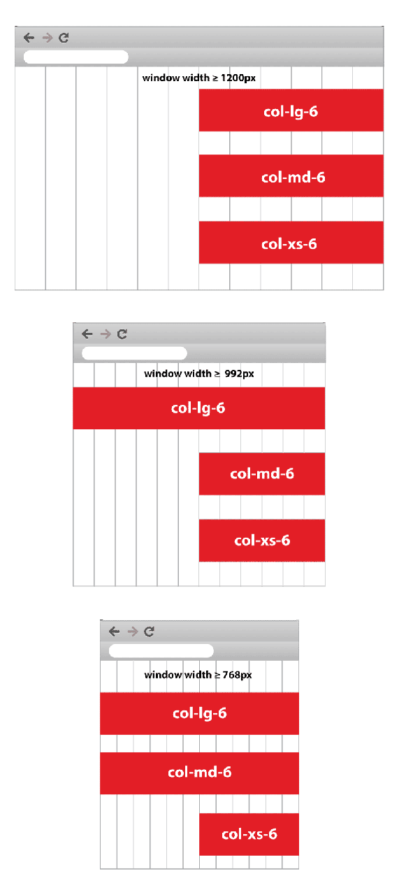

Meaning of numbers in "col-md-4"," col-xs-1", "col-lg-2" in Bootstrap
I am confused with the grid system in the new Bootstrap, particularly these classes:
col-lg-* col-md-* col-xs-*
(where * represents some number).
Can anyone please explain the following:
- How that number is aligning the grids?
- How to use these numbers?
- What they actually represent?
Answer
Applies to Bootstrap 3 only.
Ignoring the letters (x s , sm , md , lg ) for now , I'll start with just the numbers...
- the numbers (1-12) represent a portion of the total width of any div
- all divs are divided into 12 columns
- so,
col-*-6spans 6 of 12 columns (half the width),col-*-12spans 12 of 12 columns (the entire width), etc
So, if you want two equal columns to span a div, write
<div class="col-xs-6">Column 1</div> <div class="col-xs-6">Column 2</div>
Or, if you want three unequal columns to span that same width, you could write:
<div class="col-xs-2">Column 1</div> <div class="col-xs-6">Column 2</div> <div class="col-xs-4">Column 3</div>
You'll notice the # of columns always add up to 12. It can be less than
twelve, but beware if more than 12, as your offending divs will bump down to
the next row (not .row, which is another story altogether).
You can also nest columns within columns , (best with a .row wrapper
around them) such as:
<div class="col-xs-6"> <div class="row"> <div class="col-xs-4">Column 1-a</div> <div class="col-xs-8">Column 1-b</div> </div> </div> <div class="col-xs-6"> <div class="row"> <div class="col-xs-2">Column 2-a</div> <div class="col-xs-10">Column 2-b</div> </div> </div>
Each set of nested divs also span up to 12 columns of their parent div.
NOTE: Since each .col class has 15px padding on either side, you should
usually wrap nested columns in a .row, which has -15px margins. This avoids
duplicating the padding and keeps the content lined up between nested and non-
nested col classes.
-- You didn't specifically ask about the xs, sm, md, lg usage, but they go
hand-in-hand so I can't help but touch on it...
In short, they are used to define at which screen size that class should apply:
- xs = extra small screens (mobile phones)
- sm = small screens (tablets)
- md = medium screens (some desktops)
- lg = large screens (remaining desktops)
Read the " Grid Options " chapter from the official Bootstrap documentation for more details.
You should usually classify a div using multiple column classes so it
behaves differently depending on the screen size (this is the heart of what
makes bootstrap responsive). eg: a div with classes col-xs-6 and col-sm-4
will span half the screen on the mobile phone (xs) and 1/3 of the screen on
tablets(sm).
<div class="col-xs-6 col-sm-4">Column 1</div> <!-- 1/2 width on mobile, 1/3 screen on tablet) --> <div class="col-xs-6 col-sm-8">Column 2</div> <!-- 1/2 width on mobile, 2/3 width on tablet -->
NOTE: as per comment below, grid classes for a given screen size apply to
that screen size and larger unless another declaration overrides it (i.e.
col-xs-6 col-md-4 spans 6 columns on xs andsm, and 4 columns on md
andlg, even though sm and lg were never explicitly declared)
NOTE: if you don't define xs, it will default to col-xs-12 (i.e. col-
sm-6 is half the width on sm, md and lg screens, but full-width on xs
screens).
NOTE: it's actually totally fine if your .row includes more than 12
cols, as long as you are aware of how they will react. --This is a contentious
issue, and not everyone agrees.
Suggest
The Bootstrap grid system has four classes:
xs (for phones)
sm (for tablets)
md (for desktops)
lg (for larger desktops)The classes above can be combined to create more dynamic and flexible layouts.
Tip: Each class scales up, so if you wish to set the same widths for xs and sm, you only need to specify xs.
OK, the answer is easy, but read on:
col-lg- stands for column large ≥ 1200px
col-md- stands for column medium ≥ 992px
col-xs- stands for column extra small ≥ 768px
The pixel numbers are the breakpoints, so for example col-xs is targeting
the element when the window is smaller than 768px (likely mobile
devices)...
I also created the image below to show how the grid system works, in this
examples I use them with 3, like col-lg-6 to show you how the grid system
work in the page, look at how lg, md and xs are responsive to the window
size:
